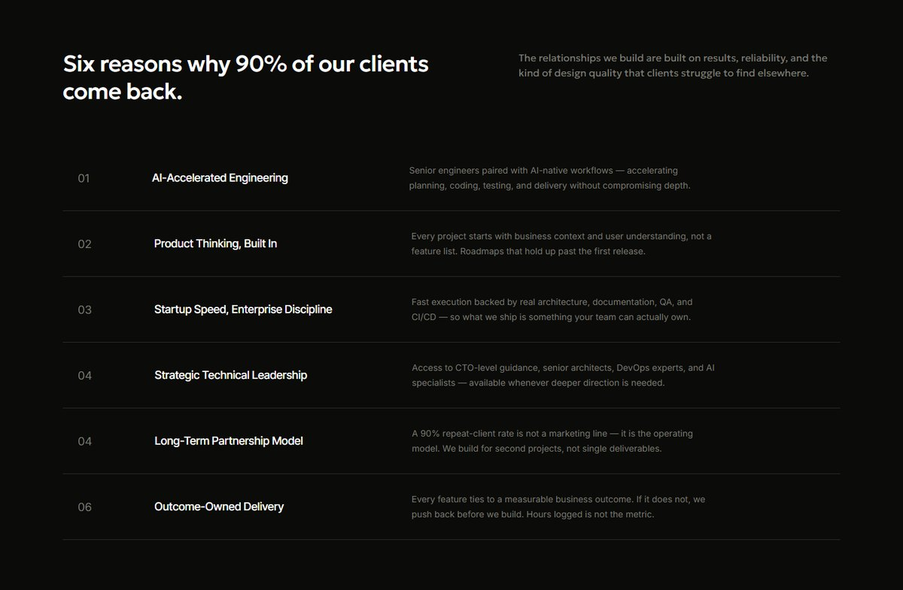
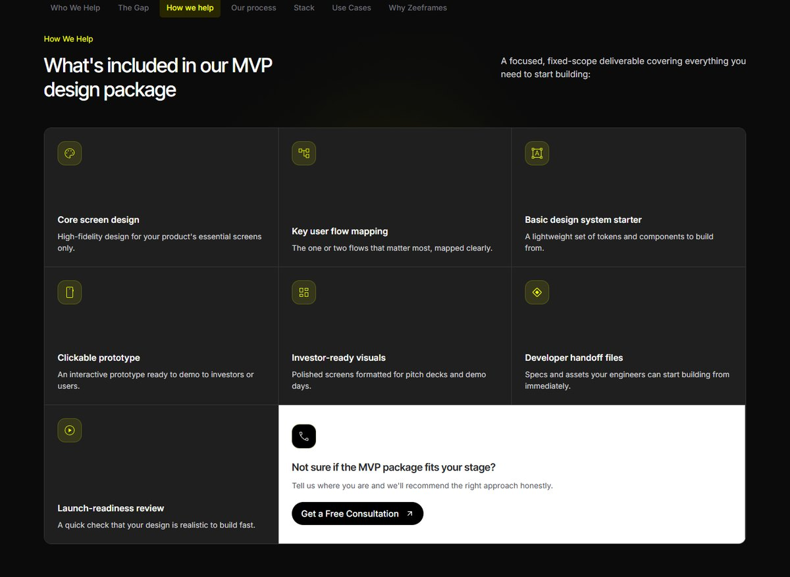
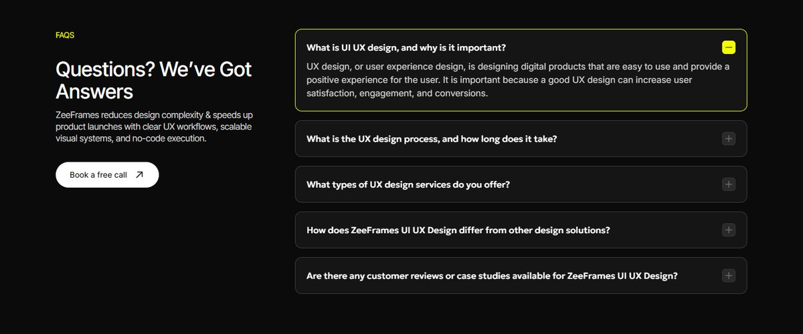
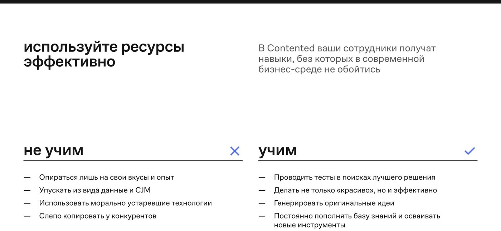

Отбирал по формам, а не по цвету: каждый блок смотрел в ч/б рядом со строками «Six reasons» на /about и бенто «What’s included» на /services/mvp-design. Только три формы — две колонки или карточки, строки-пары, таблица-матрица; в каждой стороне от трёх пунктов словами. Сначала весь referest, остальное — живые сайты, шаблоны Framer и Webflow, галереи. Внутри групп первыми идут референсы с referest. Клик по кадру раскрывает его целиком.
11 121скриншот referest просмотрен листами: все 5 945 секций и 5 176 страниц нужных индустрий
162блока, похожих на сравнение, нашли детекторы на referest; каждый я открыл в полном размере
7с referest прошли отбор с оценкой «одна студия» 4–5, ещё один — в запасе
23добрано из интернета из 211 снятых кандидатов; концептов в основной подборке нет
Эталон zeeframes

/about — пронумерованные строки «Six reasons»

/services/mvp-design — бенто «What’s included»

FAQ — карточки с тонкой рамкой
Две колонки или карточки 13

01
Contented — «не учим / учим»
referestстудия 4,5/5 · рубрика 9/12
Совпадает
шапка как у zeeframes: H2 строчными слева, приглушённый абзац справа по верхнему краю; подписи сторон крупно на волоске, пункты на тире без плашек
Чем интересен
вся разница держится на типографике: нет ни карточек, ни цвета, только ✕ и ✓ в конце линейки
Не брать
синий акцент на отметках — у zeeframes это будет лаймовый